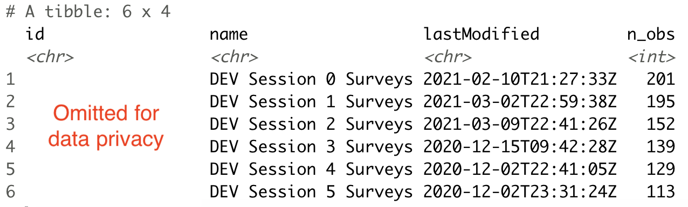
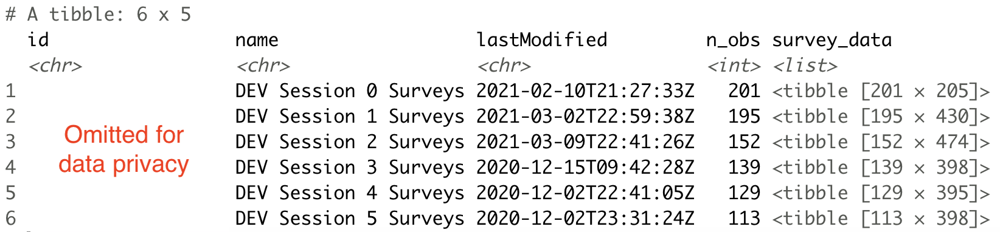
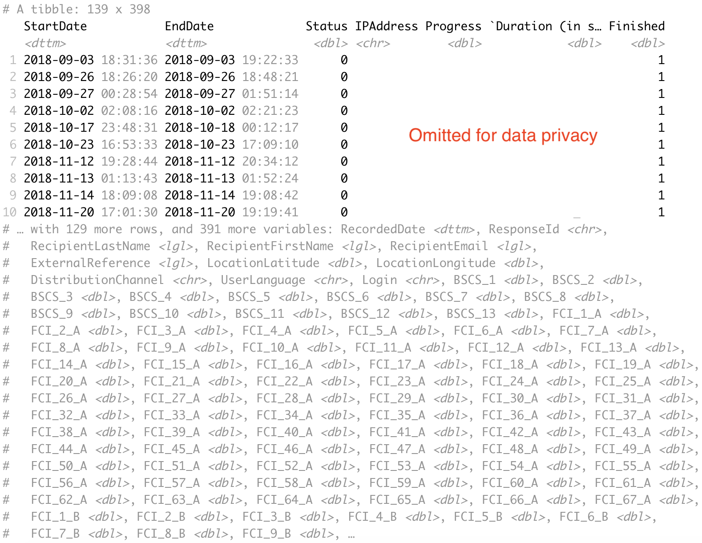
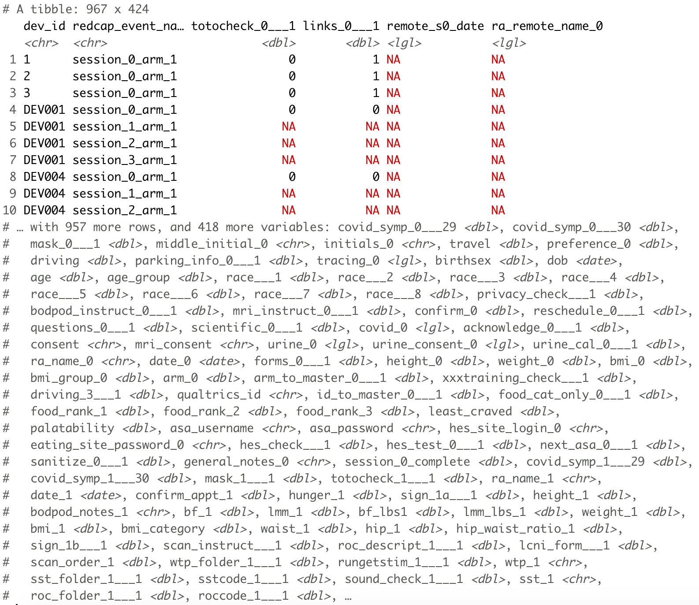
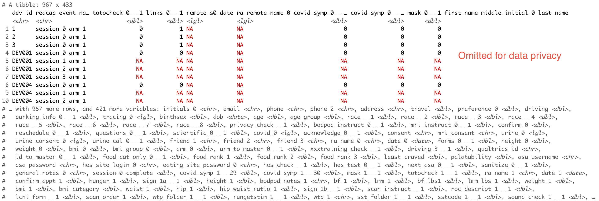

This package is designed to retrieve raw data from the Devaluation study from two sources – questionnaires administered via Qualtrics and a host of measures collected via Redcap, including outcome measures such as body mass, BMI, and hip-waist ratio.
These data are collected from participants across 6 sessions:
| Session | Study timepoint |
|---|---|
| Session 0 | Initial visit |
| Session 1 | Pre-intervention |
| Session 2 | Post-intervention |
| Session 3 | 3-month follow-up |
| Session 4 | 6-month follow-up |
| Session 5 | 12-month follow-up |
Note. The examples included here demonstrate code usage with screenshots of redacted output to protect data privacy.
To access data, you will need a credentials file, saved in .csv format, that contains valid API tokens for Qualtrics and Redcap, along with the proper UO-specific base URL for each platform. (The example shown here does not contain valid tokens.)
The credentials file should take the following form:
#> # A tibble: 2 x 3
#> data_source base_url api_token
#> <chr> <chr> <chr>
#> 1 qualtrics oregon.ca1.qualtrics.com Pbqm…
#> 2 redcap https://redcap.uoregon.edu/api/ 2A9C…To access survey data from Qualtrics, first register your Qualtrics credentials in your current R session by passing the path to where your credentials file is saved to register_qualtrics_credentials().
library(devaluation)
register_qualtrics_credentials(path_to_creds = "credentials.csv")Once your credentials are registered, you can use get_survey_info() to obtain metadata about Qualtrics surveys, including the date each survey was last modified and the number of observations collected.
survey_metadata <- get_survey_info()
survey_metadata
To include the raw data along with survey metadata, set append_raw_data = TRUE. This returns a nested tibble in which raw data are saved as a list column.
survey_raw_data <- get_survey_info(append_raw_data = TRUE)
survey_raw_data
You can also retrieve raw survey data for a given session with get_survey_responses_raw().
session_3 <- get_survey_responses_raw(session = 3)
session_3
The package also facilitates the retrieval of data from Redcap with the get_redcap_raw() function. Rather than register your Redcap credentials in your session, simply feed this function the path to your credentials file with the path_to_creds argument.
redcap_raw <- get_redcap_raw(path_to_creds = "credentials.csv")
redcap_raw
By default, identifiable information is excluded when retrieving raw Redcap data. To include identifiable variables, you must set identifiable = TRUE.
redcap_identifiable <- get_redcap_raw(path_to_creds = "credentials.csv", identifiable = TRUE)
redcap_identifiable